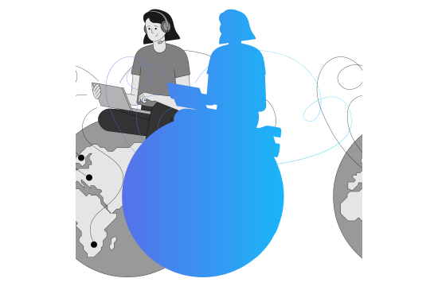
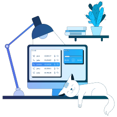

اجعل المكالمات بسيطة وسهلة باستخدام نظام الهاتف الافتراضي
أنشئ لنفسك حضوراً محلياً ومهنياً عبر الهاتف. ابق على اتصال مع عملائك في جميع أنحاء العالم
طلب حساب تجريبي

نظام الهاتف الافتراضي من "كول جير"- معالج المكالمات الآلي الأكثر كفاءة وقدرة على الإطلاق
اطلع في الوقت الفعلي على تقارير أداء الموظفين

قم بتدريب الموظفين على أساس سجلات المكالمات لأكثر عروض المبيعات فعالية

استخدم مزود خدمة هاتفية واحد في كل بلد تمارس فيه نشاطًاً تجارياً

قم بالرد على مكالمات الخطوط الأر
ضية أينما كنت، حتى أثناء التنقل
ابق على اتصال مع الزوار الدوليين
من خلال عرض أرقامهم المحلية على موقعك

قم بإجراء مكالمات من نظام إدارة
علاقات العملاء لديك وتبادل
بيانات المكالمات تلقائيًا

استعد وكن جاهزًا للعمل على الفور
1
قم بتشغيل خط هاتف في أي بلد أو منطقة دون مغادرة مكتبك
2
يقوم دعم "كول جير" بإنشاء حسابك مع جميع التفضيلات التي تحتاجها شركتك
3
أضف مستخدمين وابدأ بالاتصال بهم. وظف مندوبين جدد في دقائق
4
راقب أداء مديرك على لوحات تحكم بسيطة
5
ارتق بعلاقاتك مع العملاء إلى مستوى جديد تمامًا
مجموعة من الميزات في كل خطة
تسجيل المكالمات
قم بتسجيل وتحليل كل محادثة هاتفية لفهم احتياجات العملاء بشكل أفضل
تعرف على المزيد
 سيناريوهات الاتصال
سيناريوهات الاتصال
ضع قواعد وسيناريوهات للمكالمات الواردة. قم بتوصيل المتصل بالشخص المناسب في القسم المناسب
تعرف على المزيد
 القائمة الصوتية (الرد الآلي)
القائمة الصوتية (الرد الآلي)
رحب بعملائك برسالة ترحيب مسجلة مسبقًا وتصفح تدفق مكالماتك
تعرف على المزيد
 إدارة قائمة الانتظار
إدارة قائمة الانتظار
لا تفوت المكالمات بسبب انشغال جميع المندوبين. ضع عملائك في قائمة انتظار وقم بالرد عليهم بمجرد توفر المندوب المناسب
تعرف على المزيد
إشعارات المكالمات الواردة
قم بإعداد إشعارات لأي أحداث تؤثر على أداء العمل، سواء كانت مكالمة فائتة أو مكالمة من عميل مهم
تعرف على المزيد
تحليلات المحادثات
حوّل مكالماتك من صوت إلى نص مقروء. وفر الوقت في تحليل المحادثة من خلال تصفح نصوص الحوار بدلاً من الاستماع إليها
تعرف على المزيد
 رسائل الترحيب الصوتية
رسائل الترحيب الصوتية
قم بتحية المتصل تلقائيًا وقدم له أي معلومات ضرورية قبل توجيه إلى المندوب
تعرف على المزيد

سجلات المكالمات
قم بتخزين جميع المعلومات الضرورية حول كل مكالمة هاتفية. واطلع على المعلومات الهامة في الوقت الفعلي
تعرف على المزيد
 الإحصاءات وإعداد التقارير
الإحصاءات وإعداد التقارير
اطلع على تقارير وافية حول أداء موظفيك. تعرّف على المقاييس المهمة في لوحات تحكم بسيطة وسهلة الاستخدام
تعرف على المزيد
أسئلة شائعة حول الهاتف التجاري الافتراضي
ما هو نظام مقسم الهاتف الفرعي الافتراضي؟
نظام مقسم الهاتف الفرعي الافتراضي (VPBX) هو نظام لإدارة المكالمات يوفر العديد من ميزات الاتصال المفيدة ويعمل بالكامل عبر الإنترنت. لا يتطلب النظام تثبيت أي أجهزة أو كابلات أو تركيبات في الموقع.
يُعد نظام مقسم الهاتف الفرعي الافتراضي حلاً مثاليًا للشركات الصغيرة التي لا تستطيع الاستثمار في أجهزة باهظة الثمن أو تعيين موظفين مؤهلين لتكنولوجيا المعلومات، ولكنها لا تزال ترغب في البقاء على اتصال مع عملائها ومحترفي الرد على العملاء عبر الهاتف. تُساعد ميزة مقسم الهاتف الفرعي الافتراضي في جعل عمل موظفيك شفافًا تمامًا ، بحيث يمكن لشركتك اكتشاف استراتيجيات المبيعات الأكثر فاعلية وتحقيقاً للإيرادات.
يعمل نظام مقسم الهاتف الفرعي الافتراضي عبر الإنترنت ويمكن تهيئته بالكامل وتشغيله في غضون ساعات قليلة
يُعد نظام مقسم الهاتف الفرعي الافتراضي حلاً مثاليًا للشركات الصغيرة التي لا تستطيع الاستثمار في أجهزة باهظة الثمن أو تعيين موظفين مؤهلين لتكنولوجيا المعلومات، ولكنها لا تزال ترغب في البقاء على اتصال مع عملائها ومحترفي الرد على العملاء عبر الهاتف. تُساعد ميزة مقسم الهاتف الفرعي الافتراضي في جعل عمل موظفيك شفافًا تمامًا ، بحيث يمكن لشركتك اكتشاف استراتيجيات المبيعات الأكثر فاعلية وتحقيقاً للإيرادات.
يعمل نظام مقسم الهاتف الفرعي الافتراضي عبر الإنترنت ويمكن تهيئته بالكامل وتشغيله في غضون ساعات قليلة
ما هي مزايا نظام مقسم الهاتف الفرعي الافتراضي من "كول جير"؟
يمكن العثور على جميع الميزات المذكورة أعلاه والمزيد في نظام مقسم الهاتف الفرعي الافتراضي من "كول جير". تتيح أداة إدارة المكالمات الفعالة هذه التعامل بفعالية مع مكالمات العمل الواردة من العملاء وتنظيمها، وتجعل عمل موظفيك في كل قسم سلسًا وشفافًا.
باستخدام نظام مقسم الهاتف الفرعي الافتراضي من "كول جير"، يمكنك تسجيل وتحليل جميع المحادثات مع عملائك ، وتحسين خدمة العملاء ، وتبسيط تدفق مكالماتك ، ومراقبة عمل مديري المبيعات لديك ، والتأكد من أن الجميع يعملون بجد لتحقيق مؤشرات الأداء الرئيسية المحددة لهم.
باستخدام نظام مقسم الهاتف الفرعي الافتراضي من "كول جير"، يمكنك تسجيل وتحليل جميع المحادثات مع عملائك ، وتحسين خدمة العملاء ، وتبسيط تدفق مكالماتك ، ومراقبة عمل مديري المبيعات لديك ، والتأكد من أن الجميع يعملون بجد لتحقيق مؤشرات الأداء الرئيسية المحددة لهم.